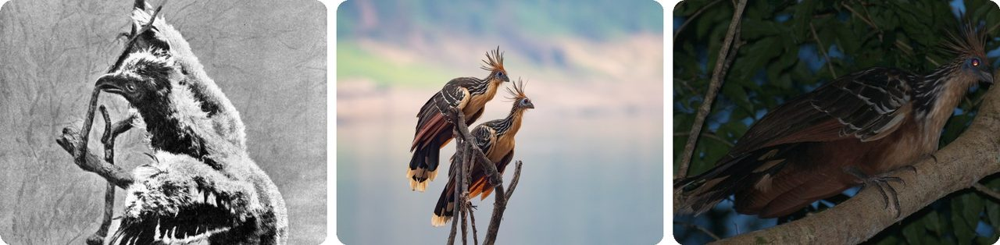

🌍 十大 脚趾甲、爪子和蹄子
2026年11月19日
1. 💅 你的脚趾甲长得只有手指甲一半快
 手指甲每个月大约长3.5毫米，脚趾甲每个月只长大约1.6毫米，差不多是一枚硬币的厚度。一整片新脚趾甲要长12到18个月，手指甲只要3到6个月。
手指甲每个月大约长3.5毫米，脚趾甲每个月只长大约1.6毫米，差不多是一枚硬币的厚度。一整片新脚趾甲要长12到18个月，手指甲只要3到6个月。
指甲是由角蛋白做的，跟爪子、蹄子和角是同一种坚韧的材料。唯一活着的部分藏在指甲根部的皮肤下面。你看得见的那片指甲，是一层层压紧的死细胞，所以剪指甲不会疼。
还有一个误会要澄清：人死后指甲并不会继续长。是皮肤变干、往回缩，所以指甲看起来变长了。
可以把它想成每根脚趾上都戴着一个小蹄子，只是薄很多。
2. 〰️ 脚趾甲上的一道横沟，能看出你几个月前生过病
 有时候指甲上会出现一道从左到右横穿的深沟。它叫博氏线，名字来自1846年描述它的法国医生约瑟夫·博。
有时候指甲上会出现一道从左到右横穿的深沟。它叫博氏线，名字来自1846年描述它的法国医生约瑟夫·博。
它是这样形成的：一场高烧、一次生病或受伤，让皮肤下面长指甲的地方暂停一阵子 → 那一段指甲长出来就比较薄 → 形成一道凹痕 → 随着指甲变长，这道凹痕慢慢往指尖移动。
得了川崎病的孩子，发烧开始一到两个月后可能会出现这种线。因为脚趾甲要一年多才能长完，这道凹痕会留很久。
这就像树的年轮，只不过记的是你生病的日子。
3. 🐎 马蹄就是一个巨大的脚趾甲
 蹄子是脚趾的尖端，外面包着一层又厚又硬的角蛋白壳，跟你的指甲是同一种东西。马的每只脚只有一个蹄子，所以它其实是用四根脚趾走路的。
蹄子是脚趾的尖端，外面包着一层又厚又硬的角蛋白壳，跟你的指甲是同一种东西。马的每只脚只有一个蹄子，所以它其实是用四根脚趾走路的。
跟你的指甲一样，蹄子也一直在长。野马在粗糙的地上走来走去，磨掉的速度跟长出来的速度差不多。
跟人一起生活的马，常常走得不够多，或者要在路上驮重物。所以蹄铁匠会帮它们修蹄子，再钉上马蹄铁来保护。
说白了，马蹄铁就是脚趾甲的手机壳。
4. 🐈 猫会把爪子收起来，让它保持锋利
 几乎所有猫科动物的爪子，不用的时候都能缩回爪子里。收起来的爪子不会在地上磨，所以一直很尖。
几乎所有猫科动物的爪子，不用的时候都能缩回爪子里。收起来的爪子不会在地上磨，所以一直很尖。
猫爪还是一层一层长的。过一阵子，最外面的一层旧爪会停止生长、准备脱落 → 猫去抓木头或猫抓板 → 旧的那层剥掉，下面露出一层新的尖爪。
猫的前爪内侧高处还有一个悬爪。它从来碰不到地面，磨损少，所以往往比其他爪子更尖更长。
换句话说，猫抓板就是猫削铅笔的地方。
5. 🐸 毛蛙会折断自己的趾骨来变出爪子
 毛蛙生活在非洲中部，比如喀麦隆这些国家。它还有一个外号叫恐怖蛙，这名字可不是白叫的。
毛蛙生活在非洲中部，比如喀麦隆这些国家。它还有一个外号叫恐怖蛙，这名字可不是白叫的。
有东西抓住它的时候，它会把趾骨尖端从固定它的小骨结上扯断 → 把这些尖尖的骨头从自己的皮肤里顶出来 → 这下它就有爪子了。这些“爪子”是骨头做的，不是角蛋白，所以不算真正的爪子。
科学家认为，等撕破的皮肤长好，这些爪子会慢慢缩回去。繁殖期雄蛙身上的“毛”也不是真的毛，而是一条条细细的皮肤，可能帮它们多吸收一些氧气。
想象一下，把自己的手指变成一把小刀。
6. 🐒 狐猴有一根专门挠痒的“厕所爪”
 狐猴、婴猴和懒猴大多数脚趾上都是扁扁的指甲，跟我们一样。可每只脚的第二个脚趾上，长着一个弯弯的梳理爪，也叫厕所爪。
狐猴、婴猴和懒猴大多数脚趾上都是扁扁的指甲，跟我们一样。可每只脚的第二个脚趾上，长着一个弯弯的梳理爪，也叫厕所爪。
它们用它来梳理毛发、挠痒，主要是头和脖子周围那些不好够到的地方。
眼镜猴每只脚上有两个梳理爪，在第二和第三个脚趾上。它们的脚几乎像手一样：大脚趾能像拇指那样抓东西。
可以把它想成长在一根脚趾上的梳子。
7. 🪶 有些鸟的中间脚趾上长着一把梳子
 鸟会往羽毛上抹油来保持羽毛整齐，可它们的嘴够不到自己的头。所以很多鸟会用脚：先把嘴上的油蹭到脚上，再用脚把油挠进头上的羽毛里。
鸟会往羽毛上抹油来保持羽毛整齐，可它们的嘴够不到自己的头。所以很多鸟会用脚：先把嘴上的油蹭到脚上，再用脚把油挠进头上的羽毛里。
鹭、夜鹰、猫头鹰和军舰鸟中间那根脚趾的爪子，一边长着细细的小齿，像一把梳子。它叫栉状爪，可能帮它们梳理头上的羽毛、抹油。
有的鸟把腿从放低的翅膀上方抬过去挠，有的从翅膀下面伸过去，用哪种方法可能跟它们的生活方式有关。
说白了，它们是用脚趾甲来做发型的。
8. 🐦 麝雉的雏鸟翅膀上长着爪子

麝雉是一种来自南美洲、头顶有刺刺冠羽的怪鸟，也是圭亚那的国鸟。它的雏鸟一出生，每只翅膀上就有两个爪子。它们用这些爪子来爬。老鹰来袭时，成鸟会大声吵闹，转移老鹰的注意力 → 雏鸟赶紧从窝里爬走 → 要是被发现，它们就掉进下面的水里，潜在水下游走，然后用翅膀上的爪子和大脚爬回去。
人们曾经拿它和始祖鸟比较，始祖鸟是一种翅膀上有爪子的早期鸟类。不过科学家现在认为，麝雉的爪子是比较新的本领，用来在会飞之前爬来爬去。
换句话说，这些宝宝是用“手臂”把树当梯子爬的。
9. 🐜 大食蚁兽用指关节走路，来保护爪子
 中美洲和南美洲的大食蚁兽，前脚上长着巨大的爪子，中间那根最大。它用爪子扒开蚂蚁窝和白蚁窝，再用又长又黏的舌头把虫子舔进嘴里。
中美洲和南美洲的大食蚁兽，前脚上长着巨大的爪子，中间那根最大。它用爪子扒开蚂蚁窝和白蚁窝，再用又长又黏的舌头把虫子舔进嘴里。
为了不让爪子磨坏，它用前脚的指关节走路，有点像大猩猩和黑猩猩。爪子一直蜷着，不碰到地面。
后脚就不一样了：后脚的爪子很短，它直接平着脚走路。
这就像握着拳头走路，免得把工具磨坏。
10. 🦖 有一种恐龙的爪子，是所有陆地动物里最长的
 镰刀龙（意思是“镰刀蜥蜴”）生活在大约6900万到6600万年前，就在今天的蒙古。它是吃植物的，最长可达10米（33英尺），手上的爪骨超过50厘米（20英寸）长，比一个大人的前臂加手掌还长。
镰刀龙（意思是“镰刀蜥蜴”）生活在大约6900万到6600万年前，就在今天的蒙古。它是吃植物的，最长可达10米（33英尺），手上的爪骨超过50厘米（20英寸）长，比一个大人的前臂加手掌还长。
1948年，第一批爪子在戈壁沙漠被发现时，给它命名的科学家以为，这是一种像乌龟一样的巨大爬行动物，用爪子来收割海草。
现在专家认为，它主要用这些爪子把树枝拉到嘴边，不过它强壮的手臂也可能帮它保护自己。
想象一把和你的手臂一样长的园艺大剪刀。
趣闻
鹤鸵是一种来自澳大利亚和新几内亚的大型不会飞的鸟，每只脚的内侧脚趾上都有一根像匕首一样的爪子，可以长到12.5厘米（5英寸）。它的腿很有力，会踢人，所以常被叫作“世界上最危险的鸟”，第二次世界大战时驻扎在新几内亚的士兵都被警告要离它远一点。可是记录显示，鸵鸟伤的人更多，在南非每年会害死两三个人。这让人好奇：哪些动物才是真正最危险的，哪些只是名声吓人？
图片来源（Wikimedia Commons）
- #1: I painted my toenails <3 (flickr) by *~Much to My Dismay~*, CC BY 2.0
- #1: Purple Toenails - May 2011 - Well I Never (flickr) by Gareth1953 All Right Now, CC BY 2.0
- #1: Toes.jpg by unknown, Attribution
- #2: Big-toe-nail.jpg by 些細な日常, CC BY-SA 4.0
- #2: Beau's lines.JPG by LynnMcCleary, CC BY-SA 4.0
- #2: Beau's line on left, middle fingernail.jpg by Elipongo, Public domain
- #3: Hoof bottom view.jpg by Alex brollo, CC BY-SA 4.0
- #3: Equine hoof hc biovision.jpg by Dr. Christoph von Horst, CC BY-SA 3.0
- #3: Farrier Winthrop Washington.jpg by Guywelch2000, CC0
- #4: Cat paws and claws 1 2015-01-16.JPG by FASTILY, CC BY-SA 4.0
- #4: Black cat in repose.jpg by SMPL Reference, CC BY-SA 3.0
- #4: Cat yawn with exposed teeth and claws.jpg by DecafPotato, CC BY-SA 4.0
- #5: Astylosternus robustus · Mayoko, CG-NI, CG by no rights reserved, CC0
- #5: Hairy frog (Trichobatrachus robustus) 1.jpg by Melvin TOULLEC, CC BY-SA 4.0
- #5: Trichobatrachus robustus.JPG by Gustavocarra, CC BY-SA 4.0
- #6: Lemur catta toilet claw.jpg by Alex Dunkel (Maky), CC BY 3.0
- #6: Varecia variegata foot with toilet-claw.jpg by Maky (Alex Dunkel), CC BY 3.0
- #6: Galago moholi 276577285.jpg by i_c_riddell, CC BY 4.0
- #7: Ardea cinerea Putzkralle.jpg by Donkey shot (Christof Bobzin), CC BY 3.0
- #7: Barn Owl Pectinate Claw.jpg by Daniel Polin, CC BY-SA 4.0
- #7: Night Heron pectinate toe by Vedant Kasambe.jpg by Vedant Raju Kasambe, CC BY 4.0
- #8: Hoatzin chick.jpg by J. Arthur Thomson., Public domain
- #8: Opisthocomus hoazin · Careiro - Amazonas, Brasilien by no rights reserved, CC0
- #8: Hoatzin (flickr) by A.Davey, CC BY 2.0
- #9: Giant Anteaters - Brevard Zoo - Flickr - Rusty Clark (5).jpg by Rusty Clark from merritt usland FLA, CC BY 2.0
- #9: Myrmecophaga tridactyla · Minas Gerais, BR by no rights reserved, CC0
- #9: IMG_6346/Brazil/Mato Grosso Do Sul/Pantanal/Giant Antéater/Grand Fourmilier/Tamanoir (flickr) by dany13, CC BY 2.0
- #10: Therizinosaurus claw.jpg by Woudloper, CC BY-SA 3.0
- #10: Therizinosaurus claws lateral.jpg by Frank Black Noir, CC BY 2.0
- #10: Therizinosaurus TD.png by TotalDino, CC BY 4.0


_1.jpg){kind=link}


.jpg){kind=link}